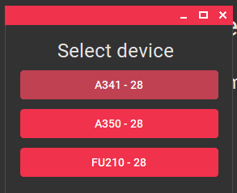

Advanced Features#
Command Line Interface#
Description#
The VSE EasyLoader 6.0.7 Headless Mode is a command-line program designed to facilitate the uploading of XML and XLSX files to a device via a serial port. This program eliminates the need for a graphical user interface, allowing for automated and batch processing of file uploads.

Usage#
To use the VSE EasyLoader 6.0.7 Headless Mode, execute the program with the following command-line options:
"VSE EasyLoader Reloaded.exe" [command] [options]
Commands#
The program supports the following commands:
upload: Uploads an XML file to a device via the specified COM port.lintable: Uploads an EasyCal calibration to a device via the specified COM port.
Options#
Each command supports the following options:
-
--com <com>: Specifies the COM port to use for communication. The<com>parameter should be replaced with the specific COM port number, such asCOM23. This option is required for successful communication with the device. -
--xml <xml>(foruploadcommand): Specifies the path to the XML file containing the data to upload. The<xml>parameter should be replaced with the file path. It is necessary to provide a valid XML file for a successful upload. -
--xlsx <xlsx>(forlintablecommand): Specifies the path to the XLSX file containing the data to upload. The<xlsx>parameter should be replaced with the file path. Ensure the XLSX file is properly formatted. -
--version: Displays the version information for the program. -
-?, -h, --help: Shows the help and usage information for the program.
Note
The --com argument is optional if only one device is connected to the PC. The program will then scan for ports and use the one it found. If there are none or more than one, it will error, and you will need to manually specify the COM port.
Example Usage#
Here are examples of how to use the VSE EasyLoader 6.0.7 Headless Mode program:
Uploading an XML file to a device on COM23:
"VSE EasyLoader Reloaded.exe" upload --com COM23 --xml "C:/path/to/file.xml"
Uploading an EasyCal calibration to COM23:
"VSE EasyLoader Reloaded.exe" lintable --com COM23 --xlsx "C:/path/to/file.xlsx"
Obtaining the Result / Success Status of the Program#
When using the VSE EasyLoader 6.0.7 Headless Mode, the output or result may not be displayed on the console by default. To capture the output, it is recommended to use the > operator in the command line to redirect the output to a text file. For example:
"VSE EasyLoader Reloaded.exe" upload --com COM23 --xml "C:/path/to/file.xml" > output.txt
By using the > operator and specifying a file name (e.g., output.txt), you can save the program's output to a text file for later reference. Without redirecting the output, the program will still function properly, but no output will be shown on the console.
Batch processing#
Automating Lintable Upload with a Batch File#
To simplify the upload process of EasyCal calibration spreadsheets, you can create a batch file that automatically finds the XLSX file in the current directory and uploads it using the VSE EasyLoader. Below is an example .bat file:
@echo off
setlocal
rem Define the path to the VSE EasyLoader executable
set "easyloader_path=%LOCALAPPDATA%\VSE EasyLoader\VSE EasyLoader Reloaded.exe"
rem Check if the VSE EasyLoader executable exists
if not exist "%easyloader_path%" (
echo VSE EasyLoader is not installed.
pause
exit /b
)
rem Check for any .xlsx files in the current directory
for %%f in (*.xlsx) do (
set "found_file=%%~ff"
goto :file_found
)
echo No XLSX file found in the current directory.
pause
exit /b
:file_found
echo Found XLSX file: %found_file%
echo Uploading with VSE EasyLoader...
"%easyloader_path%" lintable --xlsx "%found_file%" > nul 2>&1
set "exit_code=%ERRORLEVEL%"
if %exit_code%==0 (
echo Success!
) else (
echo EasyLoader exited with code: %exit_code%
)
pause
This batch file checks the current directory for any .xlsx files. If exactly one file is found, it will proceed to upload that file using the VSE EasyLoader. The script pauses after execution, allowing you to view the program's result and output in the command shell.
Example batch file for uploading multiple files to multiple devices#
This example batch file demonstrates how to automate the process of uploading multiple files to multiple devices using the VSE EasyLoader 6.0.7 Headless Mode. By leveraging the capabilities of a batch file, you can streamline and simplify the uploading process, saving time and effort.
To use this batch file, follow these steps:
-
Open Editor or a similiar text editing program to create a new file.
-
Paste the following code into the text editor:
@echo off echo VSE EasyLoader v6.0.7 Batch Upload (3x) echo: cd /D "%LOCALAPPDATA%\VSE EasyLoader" REM === CUSTOMER INFO === REM === CHANGE THE COM PORTS AND PARAMETER FILE PATHS IN THE FOLLOWING 3 COMMANDS === echo Starting upload of first device... START /B "" "VSE EasyLoader Reloaded.exe" --com "COM8" --xml "C:\tmp\upload.xml" > ezldr_log1.txt echo Starting upload of second device... START /B "" "VSE EasyLoader Reloaded.exe" --com "COM9" --xml "C:\tmp\upload.xml" > ezldr_log2.txt echo Starting upload of third device... START /B "" "VSE EasyLoader Reloaded.exe" --com "CO10" --xml "C:\tmp\upload.xml" > ezldr_log3.txt REM Check process completion echo Waiting for EasyLoader processes to finish... :loop tasklist /fi "imagename eq VSE EasyLoader Reloaded.exe" |find ":" > nul if errorlevel 1 goto loop echo Waiting for output logs to finish writing. :chk REM Wait for 1 second timeout /T 1 /NOBREAK > nul REM Check if all instances have finished if not exist ezldr_log1.txt goto chk if not exist ezldr_log2.txt goto chk if not exist ezldr_log3.txt goto chk REM Check return codes set success=true findstr /C:"Success! :)" ezldr_log1.txt > nul || set success=false findstr /C:"Success! :)" ezldr_log2.txt > nul || set success=false findstr /C:"Success! :)" ezldr_log3.txt > nul || set success=false if %success%==true ( echo SUCCESS: All uploads successful. ) else ( echo ERROR: At least one upload failed. ) REM Clean up output files del ezldr_log1.txt del ezldr_log2.txt del ezldr_log3.txt REM Keep console window open echo: pause -
Update the batch file with the necessary information:
- Modify the 3 commands file to include the COM ports of the devices you wish to upload files to. Each COM port should be listed on a separate line.
-
Set the path to the XML files you want to upload into the specific devices.
-
Save the file to a location of your choice. Make sure the file ending is
*.bat. -
Execute the batch file by double clicking it.
Explaination what the batch file does#
This batch file automates the upload process for three devices using VSE EasyLoader v6.0.5. Here's a description of what the batch file does:
-
The
@echo offcommand ensures that the commands executed in the batch file are not echoed in the console. -
The
echocommands display information about the batch upload process, such as the version of VSE EasyLoader being used and the number of devices being uploaded. -
The
cd /D "%LOCALAPPDATA%\VSE EasyLoader"command changes the current directory to the location where VSE EasyLoader is installed. -
The three
START /Bcommands initiate the upload process for each device. Each command launches the "VSE EasyLoader Reloaded.exe" program with specific command-line parameters, including the COM port and the path to the XML file to be uploaded. The output logs for each upload are redirected to separate text files (ezldr_log1.txt,ezldr_log2.txt,ezldr_log3.txt). -
The batch file then waits for all the EasyLoader processes to finish using a loop and the
tasklistcommand. Once all processes have completed, the batch file proceeds to the next step. -
The batch file waits for a short duration using the
timeoutcommand to ensure that the output logs finish writing. -
It then checks if the output logs for all three devices exist. If any of the logs are missing, it returns to the previous step to continue waiting for them to be generated.
-
The batch file checks the return codes in the output logs to determine the success or failure of each upload. If any of the logs indicate a failure, the variable
successis set tofalse. -
Based on the value of the
successvariable, the batch file displays either a success message indicating that all uploads were successful or an error message indicating that at least one upload failed. -
The output log files (
ezldr_log1.txt,ezldr_log2.txt,ezldr_log3.txt) are then deleted to clean up the files generated during the upload process. -
Finally, the
echoandpausecommands keep the console window open, allowing the user to view the output before closing it.
Please note that to use this batch file, you should make the necessary modifications to the COM ports and file paths in the three upload commands to match your specific configuration.
Creating offline presets#
EasyLoader can also be used to create a configuration file (*.easyConf-File) without a device connection.
In order to do this, you first have to go to the About EasyLoader tab using the sidebar. Then click on the SETTINGS MENU to open a context menu where you select the option Simulate device connection for *.easyConf creation.


Now select the device type that you want to create the Configuration for. The Easy Configuration tab then switches to the right layout for the device specific settings.

You can now switch to the Easy Configuration tab and create your preset. Use the Save button at the top to store your settings in a *.easyConf file.